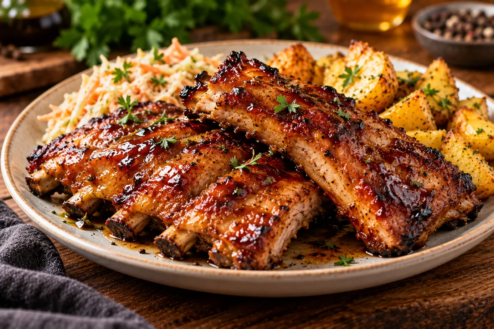

01. Przygotuj mięso
Osusz żeberka ręcznikiem papierowym. Możesz pozostawić je w całości lub podzielić na porcje.
Nasza wspólna kolekcja sprawdzonych przepisów – od rodzinnych klasyków po nowe kulinarne inspiracje.
Rodzinne historie i ulubione dania w jednym miejscu.
Rodzinny przepis mamy Michała. Zdjęcia krok po kroku, składniki, lista zakupowa i oryginalna kartka z przepisem.
Zobacz pełny przepis →Soczyste udka w marynacie z musztardą Dijon, kremowe puree ziemniaczane i majonezowa surówka z kapusty pekińskiej. Cały rodzinny obiad dla 4 osób.
Zobacz pełny przepis →Niektóre przepisy zapisuje się na kartce. Inne zostają w pamięci. My chcemy zachować wszystkie – dla siebie i dla tych, których kochamy.
♥Miękkie żeberka wieprzowe w słodko-słonej marynacie z miodu, sosu sojowego, octu winnego i czosnku. Pieczone w piekarniku do karmelizacji glazury.

Na 3–4 porcje
Osusz żeberka ręcznikiem papierowym. Możesz pozostawić je w całości lub podzielić na porcje.

Wymieszaj płynny miód, sos sojowy, ocet winny, przeciśnięty przez praskę czosnek, sól i pieprz.

Dokładnie pokryj mięso marynatą, przykryj i wstaw do lodówki na minimum 2 godziny, a najlepiej na całą noc.

Ustaw 180°C (grzanie góra–dół). Natłuść naczynie żaroodporne odrobiną masła i przełóż do niego żeberka.

Piecz około 90 minut. W trakcie od czasu do czasu obracaj mięso i polewaj je sosem z naczynia. Jeśli żeberka zbyt szybko się rumienią, przykryj je.
Na ostatnie 15–20 minut pieczenia odkryj naczynie, żeby glazura dobrze się zarumieniła. Kontroluj kolor, bo miód łatwo się przypala. Przy grubych żeberkach przedłuż pieczenie do uzyskania miękkości.
Przepis opracowany na podstawie receptury Doroty Kamińskiej — Żeberka w miodzie, uzupełniony o nasz trik pieczenia pod przykryciem.
Zdjęcie dania: wizualizacja przygotowana dla Naszej Kuchni. Zdjęcia poszczególnych składników i etapów: Pexels.